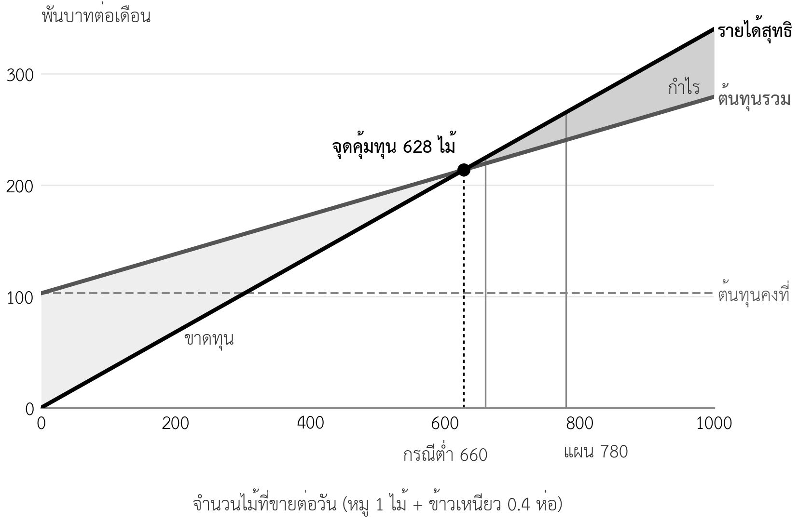

บทที่ 10 แผนการเงิน 1: ต้นทุนและจุดคุ้มทุน
เมื่อศึกษาบทนี้จบแล้ว นิสิตสามารถ
- จัดทำตารางเงินลงทุนและแหล่งเงินที่แยกส่วนที่คิดค่าเสื่อมราคาได้
- จำแนกต้นทุนคงที่และต้นทุนผันแปร และคำนวณค่าเสื่อมราคาแบบเส้นตรงได้
- กำหนดหน่วยขายของธุรกิจที่ขายสินค้าหลายรายการ และคำนวณส่วนเกินต่อหน่วยได้
- คำนวณจุดคุ้มทุนเป็นหน่วยและเป็นยอดขาย และคำนวณส่วนเกินปลอดภัยได้
- คำนวณจุดคุ้มทุนใหม่เมื่อราคา ต้นทุนผันแปร หรือต้นทุนคงที่เปลี่ยนได้
- คำนวณส่วนเกินของแต่ละสาขาหรือแต่ละสายผลิตภัณฑ์ได้
- จัดทำใบงานที่ 6 ส่วนที่ 1 ของกลุ่มได้
ความนำ
บทที่ 7 ถึงบทที่ 9 สร้างตัวเลขไว้จำนวนมาก ประมาณการยอดขายรายเดือน ต้นทุนต่อไม้ เงินลงทุนครัวกลาง ค่าจ้าง ค่าเช่า ค่าบริการบัญชี และผลของภาษีมูลค่าเพิ่ม บทนี้นำตัวเลขเหล่านั้นมารวมกันเป็นครั้งแรก เพื่อตอบคำถามพื้นฐานที่สุดของแผนธุรกิจ คือ ธุรกิจต้องขายเท่าใดจึงจะไม่ขาดทุน และขายตามแผนแล้วจะเหลือกำไรเท่าใด
คำตอบของคำถามนี้มักทำให้ผู้ประกอบการประหลาดใจ ในกรณีศึกษาหมูปิ้งอาจารย์ตั้ม ยอดขายหลังขยายเพิ่มจากปีละ 1.3 ล้านบาทเป็น 3.4 ล้านบาท แต่รายได้ที่คุณตั้มได้รับเพิ่มขึ้นน้อยกว่าที่คาดมาก และร้านมีพื้นที่ปลอดภัยก่อนขาดทุนแคบลงกว่าเดิม บทนี้จะแสดงว่าตัวเลขนี้มาจากไหน และเหตุใดแผนที่ดีต้องเขียนข้อสรุปนี้อย่างตรงไปตรงมา บทที่ 11 จะต่อจากบทนี้ด้วยงบกำไรขาดทุน กระแสเงินสด และการวิเคราะห์ความเสี่ยง
10.1 แผนการเงินเริ่มจากตัวเลขของบทก่อนหน้า
แผนการเงิน (financial plan) คือส่วนของแผนธุรกิจที่แปลงทุกการตัดสินใจในแผนให้เป็นตัวเลขทางการเงิน แผนการเงินที่ดีไม่ได้สร้างตัวเลขใหม่ แต่รวบรวมตัวเลขจากส่วนอื่นของแผน แล้วคำนวณผลลัพธ์ ถ้าตัวเลขใดในแผนการเงินไม่มีที่มาจากส่วนอื่น แสดงว่าแผนส่วนนั้นยังไม่สมบูรณ์ หรือแผนการเงินกำลังเดาตัวเลข
ตารางที่ 10.1 แสดงตัวเลขนำเข้าของแผนการเงินกรณีศึกษา (กรณีศึกษาสมมติ) และบทที่ให้ตัวเลขนั้น นิสิตควรทำตารางแบบเดียวกันเป็นหน้าแรกของแผนการเงินของกลุ่ม เพื่อให้ผู้อ่านตรวจที่มาของตัวเลขได้ และเพื่อให้กลุ่มรู้ว่าต้องแก้ส่วนใดเมื่อตัวเลขหนึ่งเปลี่ยน
ตารางที่ 10.1 ตัวเลขนำเข้าของแผนการเงินและที่มา (กรณีศึกษาสมมติ)
| ตัวเลข | ค่า | ที่มา |
|---|---|---|
| ยอดขายปีปกติ 2571 (รวมภาษีมูลค่าเพิ่ม) | 3,407,040 บาท หรือเฉลี่ยวันละ 10,920 บาท | ประมาณการยอดขาย (บทที่ 7) |
| ยอดขายกรณีต่ำและกรณีสูง | วันละ 9,240 และ 12,600 บาท | ประมาณการสามกรณี (บทที่ 7) |
| ราคา | หมูไม้ละ 10 บาท ข้าวเหนียวห่อละ 10 บาท รวมภาษี | การตั้งราคา (บทที่ 7) และภาษี (บทที่ 9) |
| ต้นทุนผันแปรต่อไม้ | 5.19 บาท (รวมของเสียร้อยละ 1) | ต้นทุนต่อหน่วย (บทที่ 8) |
| ต้นทุนผันแปรต่อห่อข้าวเหนียว | 4.00 บาท | ข้อมูลร้าน (บทที่ 1) |
| เงินลงทุนครัวกลาง | 250,000 บาท | ทรัพยากร (บทที่ 8) |
| ค่าจ้างและค่าเช่าที่เพิ่มขึ้น | 36,000 และ 4,000 บาทต่อเดือน | บุคลากร (บทที่ 8) |
| ค่าบริการบัญชีและประกันสังคม | 2,000 บาทต่อเดือน และร้อยละ 5 ของค่าจ้าง | องค์กรและกฎหมาย (บทที่ 9) |
| การตลาด | 15,000 บาทช่วงเปิด และ 1,500 บาทต่อเดือน | งบประมาณการตลาด (บทที่ 7) |
10.2 เงินลงทุนและแหล่งเงิน
10.2.1 เงินลงทุนแยกตามประเภท
เงินลงทุน (investment) คือเงินที่ต้องจ่ายก่อนธุรกิจเริ่มขายหรือก่อนส่วนที่ขยายเริ่มดำเนินงาน เงินลงทุนควรแยกเป็นสามประเภท เพราะแต่ละประเภทมีผลต่อแผนการเงินต่างกัน ประเภทแรก สินทรัพย์ที่ใช้ได้หลายปี เช่น อุปกรณ์และการปรับปรุงสถานที่ ซึ่งต้องคิดค่าเสื่อมราคา ประเภทที่สอง เงินมัดจำ ซึ่งได้คืนเมื่อเลิกเช่า จึงไม่คิดค่าเสื่อม ประเภทที่สาม เงินทุนหมุนเวียน (working capital) คือเงินสดที่ต้องมีไว้จ่ายวัตถุดิบและค่าใช้จ่ายในช่วงแรกก่อนรายได้เข้ามาเพียงพอ ตารางที่ 10.2 แยกเงินลงทุนของกรณีศึกษาตามประเภท
ตารางที่ 10.2 เงินลงทุนของแผนขยายแยกตามประเภท (บาท กรณีศึกษาสมมติ)
| รายการ | ครัวกลาง | สาขาใหม่แห่งละ | รวมทั้งโครงการ | คิดค่าเสื่อม |
|---|---|---|---|---|
| อุปกรณ์และการปรับปรุงสถานที่ | 250,000 | 69,000 | 388,000 | คิด |
| มัดจำค่าเช่า 2 เดือน | – | 6,000 | 12,000 | ไม่คิด |
| เงินทุนหมุนเวียนเริ่มต้น | – | 25,000 | 50,000 | ไม่คิด |
| รวมเงินลงทุน | 250,000 | 100,000 | 450,000 | |
| ค่าใช้จ่ายก่อนเปิด (การตลาด 15,000 จดทะเบียน 10,000) | 25,000 | เป็นค่าใช้จ่ายของปี 2570 | ||
| เงินที่ต้องใช้ทั้งหมด | 475,000 |
อุปกรณ์ของสาขาใหม่แห่งละ 69,000 บาทประกอบด้วยรถเข็นและเตาย่าง 35,000 บาท เต็นท์ ป้าย และโต๊ะ 15,000 บาท ตู้แช่ขนาดเล็กและกล่องเก็บความเย็น 10,000 บาท และการติดตั้งไฟฟ้า น้ำ และการตกแต่ง 9,000 บาท ส่วนรายการของครัวกลางแยกไว้แล้วในตารางที่ 8.4
10.2.2 แหล่งเงิน
เงินที่ต้องใช้ทั้งหมดต้องมีแหล่งเงินรองรับครบทุกบาท แผนที่มีเงินลงทุนแต่ไม่บอกว่าเงินมาจากไหน หรือแหล่งเงินรวมแล้วไม่เท่ากับเงินที่ต้องใช้ เป็นข้อผิดพลาดที่ผู้อ่านแผนเห็นทันที ในกรณีศึกษา เงิน 475,000 บาทมาจากสามแหล่ง คือ เงินของคุณตั้ม 150,000 บาท สินเชื่อ 300,000 บาท และเงินสดจากการดำเนินงานของสาขาเดิม 25,000 บาท สำหรับค่าใช้จ่ายก่อนเปิด
สินเชื่อในแผนนี้ใช้ข้อสมมติว่ากู้ 300,000 บาท ระยะเวลา 5 ปี ดอกเบี้ยร้อยละ 7.5 ต่อปี ผ่อนชำระเท่ากันทุกเดือนเดือนละ 6,011.38 บาท รับเงินในเดือนเมษายน 2570 และเริ่มผ่อนเดือนพฤษภาคม 2570 ค่างวดแต่ละเดือนประกอบด้วยดอกเบี้ยและเงินต้น ในบทนี้นับเฉพาะดอกเบี้ยเป็นต้นทุน ซึ่งในปี 2571 เฉลี่ยเดือนละประมาณ 1,511 บาท ส่วนเงินต้นไม่ใช่ต้นทุน แต่เป็นเงินสดที่ต้องจ่าย ซึ่งบทที่ 11 จะนำไปไว้ในกระแสเงินสด อัตราดอกเบี้ยจริงขึ้นกับธนาคารและเงื่อนไขของผู้กู้ บทที่ 12 จะเปรียบเทียบแหล่งเงินทุนอื่น
10.3 ต้นทุนคงที่และต้นทุนผันแปร
10.3.1 จำแนกต้นทุน
ต้นทุนผันแปร (variable cost) คือต้นทุนที่เปลี่ยนตามจำนวนที่ขาย เช่น เนื้อหมู ข้าวเหนียว ถ่าน และถุง ขายมากก็ใช้มาก ต้นทุนคงที่ (fixed cost) คือต้นทุนที่ไม่เปลี่ยนตามจำนวนที่ขายในช่วงหนึ่ง เช่น ค่าเช่าและค่าจ้างรายเดือน (Garrison et al., 2021) การจำแนกนี้เป็นพื้นฐานของการคำนวณจุดคุ้มทุน และต้องจำแนกตามพฤติกรรมของต้นทุนในธุรกิจนั้นจริง ไม่ใช่ตามชื่อรายการ ตัวอย่างเช่น ค่าจ้างพนักงานสาขาของกรณีศึกษาเป็นต้นทุนคงที่ เพราะจ่ายเป็นรายเดือนไม่ว่าขายได้กี่ไม้ แต่ถ้าธุรกิจจ่ายค่าแรงเป็นรายชิ้น ค่าแรงนั้นจะเป็นต้นทุนผันแปร
ต้นทุนคงที่มีสองรายการที่แผนของนิสิตมักลืม รายการแรกคือค่าเสื่อมราคา (depreciation) ซึ่งกระจายเงินลงทุนในอุปกรณ์ไปตามอายุการใช้งาน กรณีศึกษาใช้วิธีเส้นตรง อายุ 5 ปี ไม่มีมูลค่าซาก ค่าเสื่อมราคาจึงเท่ากับ 388,000 บาทหาร 60 เดือน หรือเดือนละประมาณ 6,467 บาท รายการที่สองคือค่าตอบแทนของเจ้าของ ธุรกิจที่เจ้าของทำงานเองเต็มเวลาแต่แผนไม่นับค่าตอบแทนของเจ้าของ จะแสดงกำไรที่สูงเกินจริง เพราะกำไรนั้นรวมค่าแรงของเจ้าของไว้ด้วย กรณีศึกษาใช้ข้อสมมติว่าคุณตั้มได้รับค่าตอบแทนเดือนละ 20,000 บาท
10.3.2 ต้นทุนที่จำแนกยาก
ต้นทุนบางรายการไม่ได้คงที่หรือผันแปรทั้งหมด ต้นทุนกึ่งผันแปร (mixed cost) มีทั้งส่วนที่จ่ายเท่าเดิมทุกเดือนและส่วนที่เพิ่มตามการขาย เช่น ค่าไฟฟ้าที่มีค่าบริการรายเดือนและค่าใช้ไฟตามการผลิต ส่วนต้นทุนคงที่เป็นขั้นคือต้นทุนที่คงที่ในช่วงหนึ่ง แต่เพิ่มขึ้นทั้งก้อนเมื่อยอดขายเกินช่วงนั้น เช่น ค่าจ้างพนักงานเสียบไม้ในบทที่ 8 ซึ่งพอสำหรับวันละ 960 ไม้ ถ้าขายมากกว่านั้นต้องจ้างเพิ่มอีกหนึ่งคน สำหรับแผนธุรกิจระดับนี้ ให้จำแนกต้นทุนกึ่งผันแปรตามส่วนที่ใหญ่กว่า และเขียนช่วงที่ต้นทุนคงที่ยังใช้ได้ไว้ในแผน
ตารางที่ 10.3 แสดงตัวอย่างการจำแนกต้นทุนของธุรกิจที่นิสิตมักเลือกทำในรายวิชานี้ นิสิตใช้เป็นจุดเริ่มต้นได้ แต่ต้องตรวจกับวิธีจ่ายเงินจริงของธุรกิจกลุ่มตนเอง
ตารางที่ 10.3 ตัวอย่างการจำแนกต้นทุนของธุรกิจต่างประเภท
| ธุรกิจ | ต้นทุนผันแปร | ต้นทุนคงที่ | ต้นทุนที่ต้องระวัง |
|---|---|---|---|
| ร้านกาแฟ | เมล็ดกาแฟ นม แก้ว ฝา หลอด | ค่าเช่า ค่าจ้างรายเดือน ค่าเสื่อมเครื่องชง | ค่าไฟ (กึ่งผันแปร) ค่าธรรมเนียมแอปส่งอาหาร (ผันแปรเป็นร้อยละของยอดขาย) |
| ขายเสื้อผ้าออนไลน์ | ต้นทุนเสื้อ ถุง ค่าขนส่ง ค่าธรรมเนียมแพลตฟอร์ม | ค่าโฆษณารายเดือน ค่าเช่าโกดัง | ค่าโฆษณาที่จ่ายตามคลิก (ผันแปรตามการขายโดยประมาณ) สินค้าคืน |
| บริการติวหนังสือ | ค่าตอบแทนผู้สอนรายชั่วโมง เอกสาร | ค่าเช่าห้อง ค่าระบบเรียนออนไลน์ | ผู้สอนประจำรายเดือน (คงที่เป็นขั้นตามจำนวนห้อง) |
| ผลิตสบู่สมุนไพร | น้ำมัน สมุนไพร บรรจุภัณฑ์ | ค่าเช่าสถานที่ผลิต ค่าเสื่อมอุปกรณ์ ค่าขอเลขจดแจ้ง | ของเสียจากล็อตที่ไม่ผ่านมาตรฐาน |
10.3.3 ต้นทุนคงที่ต่อเดือน
ตารางที่ 10.4 รวมต้นทุนคงที่ของปีปกติ 2571 ซึ่งเป็นปีแรกที่ทั้งสามสาขาและครัวกลางดำเนินงานครบทั้งปี การใช้ปีปกติในการคำนวณจุดคุ้มทุนทำให้เห็นโครงสร้างต้นทุนที่แท้จริง โดยไม่ถูกบิดจากช่วงไต่ระดับของปีแรก ส่วนปี 2570 ซึ่งมีการเปิดสาขากลางปี จะคำนวณเป็นรายเดือนในบทที่ 11
ตารางที่ 10.4 ต้นทุนคงที่ต่อเดือน ปี 2571 (บาท กรณีศึกษาสมมติ)
| รายการ | รายละเอียด | ต่อเดือน |
|---|---|---|
| สาขาเดิม | ค่าเช่า 3,000 ค่าจ้าง 9,000 น้ำ ไฟ แก๊ส 1,500 อื่น ๆ 1,500 | 15,000 |
| สาขาใหม่สองแห่ง | แห่งละ ค่าเช่า 3,000 ค่าจ้าง 9,000 น้ำ ไฟ 1,000 อื่น ๆ 1,000 | 28,000 |
| ครัวกลาง | ค่าเช่า 4,000 ค่าจ้าง 18,000 ไฟฟ้า 3,000 น้ำมันและซ่อมรถ 1,500 | 26,500 |
| สำนักงานบัญชี | บทที่ 9 | 2,000 |
| การตลาดต่อเนื่อง | บทที่ 7 | 1,500 |
| ประกันสังคมส่วนนายจ้าง | ร้อยละ 5 ของค่าจ้างใหม่ 36,000 บาท | 1,800 |
| ค่าเสื่อมราคา | 388,000 ÷ 60 เดือน | 6,467 |
| ค่าตอบแทนเจ้าของ | ข้อสมมติ | 20,000 |
| ดอกเบี้ยเงินกู้ | เฉลี่ยปี 2571 | 1,511 |
| รวม | 102,778 |
10.4 หน่วยขายและส่วนเกินต่อหน่วย
10.4.1 หน่วยขายของธุรกิจที่ขายหลายรายการ
การคำนวณจุดคุ้มทุนต้องมีหน่วยที่ใช้นับ ธุรกิจที่ขายสินค้าอย่างเดียวนับเป็นชิ้นได้ทันที แต่ร้านส่วนใหญ่ขายหลายรายการ วิธีที่ใช้ได้ง่ายคือกำหนดหน่วยขาย (sales unit) ตามสัดส่วนที่ลูกค้าซื้อจริง ร้านขายหมูวันละ 300 ไม้และข้าวเหนียว 120 ห่อ สาขาใหม่ขาย 240 ไม้และ 96 ห่อ ซึ่งเป็นสัดส่วนเดียวกัน คือข้าวเหนียว 0.4 ห่อต่อหมูหนึ่งไม้ หน่วยขายของกรณีศึกษาจึงเท่ากับหมู 1 ไม้กับข้าวเหนียว 0.4 ห่อ ซึ่งมียอดขายรวมภาษี 14 บาท ตรงกับรายได้ต่อไม้ที่ใช้คิดย้อนกลับในบทที่ 1
ข้อสมมติเรื่องสัดส่วนนี้ต้องตรวจกับข้อมูลจริง ถ้าลูกค้าสาขาใหม่ซื้อข้าวเหนียวน้อยกว่า ส่วนเกินต่อหน่วยและจุดคุ้มทุนจะเปลี่ยน ธุรกิจที่มีสินค้าหลายรายการและสัดส่วนไม่แน่นอนควรคำนวณจุดคุ้มทุนเป็นยอดขาย โดยใช้อัตราส่วนเกินเฉลี่ย ซึ่งจะอธิบายในหัวข้อ 10.5
10.4.2 ส่วนเกินต่อหน่วยหลังภาษีมูลค่าเพิ่ม
ส่วนเกินต่อหน่วย (contribution margin per unit) เท่ากับรายได้สุทธิต่อหน่วยหักต้นทุนผันแปรต่อหน่วย (บทที่ 7) เมื่อร้านจดทะเบียนภาษีมูลค่าเพิ่มแล้ว รายได้สุทธิคือยอดขายหารด้วย 1.07 ไม่ใช่ยอดขายเต็ม (บทที่ 9) ตารางที่ 10.5 เปรียบเทียบส่วนเกินต่อหน่วยของร้านเดิมก่อนขยายกับหลังขยาย และแสดงว่าส่วนเกินต่อหน่วยลดลง แม้ครัวกลางลดต้นทุนต่อไม้ได้แล้ว เพราะภาษีมูลค่าเพิ่มลดรายได้สุทธิมากกว่าที่ครัวกลางประหยัดได้
ตารางที่ 10.5 ส่วนเกินต่อหน่วยก่อนและหลังขยาย (บาท กรณีศึกษาสมมติ)
| รายการ | ร้านเดิม (ก่อนขยาย) | หลังขยาย (ปี 2571) |
|---|---|---|
| ยอดขายต่อหน่วย (รวมภาษี) | 14.00 | 14.00 |
| รายได้สุทธิต่อหน่วย | 14.00 | 13.08 (14 ÷ 1.07) |
| ต้นทุนผันแปร: หมู 1 ไม้ | 5.50 | 5.19 |
| ต้นทุนผันแปร: ข้าวเหนียว 0.4 ห่อ | 1.60 | 1.60 |
| ส่วนเกินต่อหน่วย | 6.90 | 6.29 |
| อัตราส่วนเกิน (ส่วนเกิน ÷ รายได้สุทธิ) | ร้อยละ 49.3 | ร้อยละ 48.1 |
10.5 จุดคุ้มทุนและส่วนเกินปลอดภัย
10.5.1 คำนวณจุดคุ้มทุน
จุดคุ้มทุน (break-even point) คือระดับการขายที่ส่วนเกินรวมเท่ากับต้นทุนคงที่พอดี ธุรกิจไม่มีกำไรและไม่ขาดทุน คำนวณได้สองแบบ แบบแรกเป็นหน่วย คือต้นทุนคงที่หารด้วยส่วนเกินต่อหน่วย แบบที่สองเป็นยอดขาย คือต้นทุนคงที่หารด้วยอัตราส่วนเกิน (Garrison et al., 2021) สำหรับกรณีศึกษา
จุดคุ้มทุนเป็นหน่วย = 102,778 ÷ 6.294 ≈ 16,329 หน่วยต่อเดือน หรือประมาณ 628 ไม้ต่อวัน (26 วันต่อเดือน)
จุดคุ้มทุนเป็นยอดขาย = 102,778 ÷ 0.481 ≈ 213,700 บาทต่อเดือน (รายได้สุทธิ) หรือยอดขายรวมภาษีประมาณวันละ 8,793 บาท
ตัวเลขสุดท้ายเป็นตัวเลขที่ใช้สื่อสารกับทีมได้ง่ายที่สุด เพราะเทียบกับยอดขายที่บันทึกได้ทุกวัน สามสาขาต้องขายรวมกันวันละประมาณ 8,800 บาทเพื่อไม่ขาดทุน เมื่อเทียบกับยอดขายตามแผนวันละ 10,920 บาท
10.5.2 ส่วนเกินปลอดภัย
จุดคุ้มทุนเพียงอย่างเดียวยังไม่บอกว่าแผนเสี่ยงเพียงใด ตัวเลขที่บอกคือส่วนเกินปลอดภัย (margin of safety) ซึ่งเท่ากับยอดขายตามแผนหักยอดขายที่จุดคุ้มทุน แล้วหารด้วยยอดขายตามแผน ตัวเลขนี้บอกว่ายอดขายลดลงได้มากที่สุดเท่าใดก่อนจะขาดทุน ตารางที่ 10.6 เปรียบเทียบร้านเดิมกับหลังขยาย และให้ข้อสรุปที่สำคัญที่สุดของบทนี้
ตารางที่ 10.6 จุดคุ้มทุนและกำไรก่อนและหลังขยาย (ต่อเดือน กรณีศึกษาสมมติ)
| รายการ | ร้านเดิม (ก่อนขยาย) | หลังขยาย (ปี 2571) |
|---|---|---|
| ขายตามแผน (ไม้ต่อวัน) | 300 | 780 |
| ส่วนเกินรวม | 53,820 | 127,645 |
| ต้นทุนคงที่ (รวมค่าตอบแทนเจ้าของ 20,000) | 35,000 | 102,778 |
| กำไรก่อนภาษี | 18,820 | 24,867 |
| รายได้ของคุณตั้ม (ค่าตอบแทน + กำไร) | 38,820 | 44,867 |
| จุดคุ้มทุน (ไม้ต่อวัน) | 195 | 628 |
| ส่วนเกินปลอดภัย | ร้อยละ 35.0 | ร้อยละ 19.5 |
ยอดขายเพิ่มขึ้นประมาณ 2.6 เท่า แต่รายได้ของคุณตั้มเพิ่มขึ้นเพียงเดือนละประมาณ 6,000 บาท และส่วนเกินปลอดภัยลดลงจากร้อยละ 35 เหลือร้อยละ 19.5 สาเหตุมีสามข้อ ข้อแรก ต้นทุนคงที่เพิ่มขึ้นเกือบสามเท่า จากครัวกลาง ค่าจ้างพนักงานใหม่ ค่าเสื่อมราคา และดอกเบี้ย ข้อที่สอง สาขาใหม่ขายได้วันละ 240 ไม้ น้อยกว่าสาขาเดิม แต่มีต้นทุนคงที่ใกล้เคียงกัน ข้อที่สาม ภาษีมูลค่าเพิ่มลดรายได้สุทธิของทุกไม้ รวมทั้งไม้ที่ขายในสาขาเดิมด้วย
ข้อสรุปนี้ไม่ได้แปลว่าไม่ควรขยาย แต่แปลว่าแผนต้องเขียนเหตุผลของการขยายให้ถูกต้อง การขยายในระยะที่ 1 ไม่ได้ทำให้คุณตั้มรวยขึ้นมากในทันที เหตุผลที่แท้จริงคือการสร้างระบบครัวกลาง ทีม และหลักฐานที่ระยะที่ 2 ต้องใช้ ซึ่งตรงกับหลักของรายวิชาว่าวิธีการไปถึงเป้าหมายสำคัญกว่าขนาดของเป้าหมาย ภาพที่ 10.1 แสดงความสัมพันธ์ทั้งหมดนี้ในกราฟเดียว

กราฟจุดคุ้มทุนแสดงรายได้สุทธิและต้นทุนรวมต่อเดือนตามจำนวนไม้ที่ขายต่อวัน เส้นทั้งสองตัดกันที่ 628 ไม้ต่อวัน ด้านซ้ายของจุดตัดคือพื้นที่ขาดทุน ด้านขวาคือพื้นที่กำไร ระยะห่างระหว่างจุดคุ้มทุนกับแผน 780 ไม้คือส่วนเกินปลอดภัย และกรณีต่ำในบทที่ 7 ซึ่งขายวันละ 660 ไม้ อยู่ห่างจากจุดคุ้มทุนเพียง 32 ไม้ ในกรณีต่ำ ร้านยังมีกำไรเดือนละประมาณ 5,229 บาท แต่ต้องจ่ายเงินต้นเงินกู้เดือนละประมาณ 4,500 บาทจากกำไรนี้ ซึ่งบทที่ 11 จะวิเคราะห์ด้วยกระแสเงินสด
10.5.3 ยอดขายที่ต้องการเพื่อกำไรเป้าหมาย
สูตรจุดคุ้มทุนใช้ตอบคำถามที่กว้างกว่าการไม่ขาดทุนได้ ถ้าต้องการกำไรเป้าหมายจำนวนหนึ่ง ให้บวกกำไรเป้าหมายเข้ากับต้นทุนคงที่ แล้วหารด้วยส่วนเกินต่อหน่วย ผลที่ได้คือจำนวนหน่วยที่ต้องขาย คำตอบนี้มีประโยชน์เมื่อนำไปเทียบกับข้อจำกัดในบทก่อนหน้า คือขนาดตลาดที่ร้านเข้าถึงได้ (SOM) ในบทที่ 4 และกำลังการผลิตสูงสุดของครัวกลางวันละ 960 ไม้ในบทที่ 8 (ตารางที่ 10.7)
ตารางที่ 10.7 จำนวนไม้ที่ต้องขายเพื่อกำไรเป้าหมาย (กรณีศึกษาสมมติ)
| กำไรเป้าหมายต่อเดือน | ไม้ต่อวันที่ต้องขาย | เทียบกับแผน 780 ไม้ | เทียบกับกำลังครัวกลาง 960 ไม้ |
|---|---|---|---|
| 0 (จุดคุ้มทุน) | 628 | ต่ำกว่าแผน | ทำได้ |
| 20,000 บาท | 750 | ต่ำกว่าแผน | ทำได้ |
| 24,867 บาท (กำไรตามแผน) | 780 | เท่ากับแผน | ทำได้ |
| 40,000 บาท | 872 | สูงกว่าแผนและสูงกว่า SOM | ทำได้แต่เหลือที่ว่างน้อย |
| 60,000 บาท | 995 | สูงกว่าแผนมาก | เกินกำลัง ต้องลงทุนเพิ่ม |
ถ้าคุณตั้มต้องการกำไรเดือนละ 40,000 บาท ร้านต้องขายวันละ 872 ไม้ ซึ่งสูงกว่า SOM ที่วิเคราะห์ไว้ในบทที่ 4 แปลว่าเป้ากำไรนี้ไม่มีหลักฐานด้านตลาดรองรับ ส่วนกำไร 60,000 บาทต้องขายเกินกำลังของครัวกลาง ซึ่งหมายถึงการลงทุนและต้นทุนคงที่เพิ่ม จุดคุ้มทุนจะเลื่อนสูงขึ้นอีก การคำนวณแบบนี้ช่วยให้ผู้ประกอบการตั้งเป้ากำไรที่สอดคล้องกับตลาดและกำลังการผลิต แทนการตั้งเป้าจากความต้องการเพียงอย่างเดียว
10.5.4 ข้อผิดพลาดที่พบบ่อย
การคำนวณจุดคุ้มทุนใช้สูตรง่าย แต่ผลจะผิดทั้งหมดถ้าตัวเลขที่ใส่ผิด ตารางที่ 10.8 รวบรวมข้อผิดพลาดที่พบบ่อยในแผนของนิสิต ซึ่งใช้เป็นรายการตรวจก่อนส่งใบงานที่ 6 ได้
ตารางที่ 10.8 ข้อผิดพลาดที่พบบ่อยในการคำนวณจุดคุ้มทุน
| ข้อผิดพลาด | ผลที่เกิด | วิธีแก้ |
|---|---|---|
| หารต้นทุนคงที่ด้วยราคาขาย แทนส่วนเกินต่อหน่วย | จุดคุ้มทุนต่ำเกินจริงมาก | ใช้ราคาหักต้นทุนผันแปรเสมอ |
| ใช้ยอดขายรวมภาษีมูลค่าเพิ่มเป็นรายได้ | ส่วนเกินสูงเกินจริง | หารด้วย 1.07 เมื่อจดทะเบียนแล้ว |
| ลืมค่าเสื่อมราคา ค่าตอบแทนเจ้าของ หรือดอกเบี้ย | ต้นทุนคงที่ต่ำเกินจริง | ตรวจกับตารางที่ 10.4 |
| นับค่างวดเงินกู้ทั้งก้อนเป็นต้นทุน | ต้นทุนคงที่สูงเกินจริง | นับเฉพาะดอกเบี้ย ส่วนเงินต้นอยู่ในกระแสเงินสด |
| ใช้ต้นทุนผันแปรที่ไม่รวมของเสีย | ส่วนเกินสูงเกินจริง | ใช้ต้นทุนต่อหน่วยที่ขายได้ (บทที่ 8) |
| คำนวณจากเดือนที่ยังไต่ระดับ | จุดคุ้มทุนดูสูงผิดปกติ | ใช้ปีปกติที่ดำเนินงานครบ |
| แสดงจุดคุ้มทุนโดยไม่เทียบกับแผน | ผู้อ่านไม่รู้ว่าแผนเสี่ยงเพียงใด | แสดงส่วนเกินปลอดภัยคู่กันเสมอ |
10.6 ราคา ต้นทุน และจุดคุ้มทุน
จุดคุ้มทุนเปลี่ยนเมื่อตัวเลขใดตัวเลขหนึ่งในสูตรเปลี่ยน การทดลองเปลี่ยนตัวเลขทีละตัวช่วยตอบว่าการตัดสินใจใดในแผนมีผลต่อความเสี่ยงมากที่สุด ตารางที่ 10.9 ทดลองห้ากรณีจากการตัดสินใจในบทก่อนหน้า
ตารางที่ 10.9 จุดคุ้มทุนเมื่อตัวเลขในแผนเปลี่ยน (กรณีศึกษาสมมติ)
| กรณี | สิ่งที่เปลี่ยน | จุดคุ้มทุน (ไม้ต่อวัน) | ส่วนเกินปลอดภัย |
|---|---|---|---|
| แผนฐาน | – | 628 | ร้อยละ 19.5 |
| ครัวกลางไม่ลดต้นทุน | ต้นทุนต่อไม้ 5.50 บาท แทน 5.19 บาท | 661 | ร้อยละ 15.3 |
| ไม่ต้องเสียภาษีมูลค่าเพิ่ม | รายได้สุทธิต่อหน่วย 14 บาท | 548 | ร้อยละ 29.7 |
| ขึ้นราคาไม้ละ 11 บาท | ยอดขายต่อหน่วย 15 บาท ยอดขายจำนวนไม้เท่าเดิม | 547 | ร้อยละ 29.9 |
| ไม่นับค่าตอบแทนเจ้าของ | ต้นทุนคงที่ลด 20,000 บาท | 506 | ร้อยละ 35.1 |
ตารางนี้ให้สามข้อสังเกต ข้อแรก ถ้าครัวกลางไม่ลดต้นทุนได้ตามแผน จุดคุ้มทุนจะเพิ่มขึ้น 33 ไม้ต่อวัน การคุมของเสียในบทที่ 8 จึงเป็นเรื่องการเงินโดยตรง ข้อที่สอง การขึ้นราคาไม้ละ 1 บาทให้ผลเกือบเท่ากับการไม่ต้องเสียภาษีมูลค่าเพิ่ม แต่ตารางนี้สมมติว่าลูกค้าซื้อจำนวนไม้เท่าเดิม ถ้าลูกค้าซื้อลดลงเพราะราคาสูงขึ้น ผลจะต่างไป ซึ่งต้องกลับไปตรวจกับการวิเคราะห์คู่แข่งในบทที่ 5 ข้อที่สาม แถวสุดท้ายแสดงว่าการไม่นับค่าตอบแทนเจ้าของทำให้แผนดูปลอดภัยกว่าความจริงมาก ผู้อ่านแผนที่มีประสบการณ์จะตรวจรายการนี้เสมอ
10.7 ส่วนเกินของแต่ละสาขา
ธุรกิจที่มีหลายสาขาหรือหลายสายผลิตภัณฑ์ควรคำนวณส่วนเกินของแต่ละจุดด้วย เพื่อตอบว่าแต่ละสาขาช่วยจ่ายต้นทุนส่วนกลางได้เท่าใด วิธีคำนวณคือ ส่วนเกินรวมของสาขา หักต้นทุนคงที่ที่เกิดขึ้นเพราะสาขานั้นโดยตรง เช่น ค่าเช่าและค่าจ้างของสาขา ผลที่ได้คือส่วนเกินของสาขา (segment margin) ส่วนต้นทุนที่ใช้ร่วมกัน เช่น ครัวกลางและค่าตอบแทนเจ้าของ ไม่ควรกระจายให้สาขา เพราะจะทำให้สาขาที่ดีดูเหมือนขาดทุน (ตารางที่ 10.10)
ตารางที่ 10.10 ส่วนเกินของแต่ละสาขาต่อเดือน ปี 2571 (บาท กรณีศึกษาสมมติ)
| รายการ | สาขาเดิม | สาขาใหม่ แห่งละ | รวม |
|---|---|---|---|
| ไม้ต่อวัน | 300 | 240 | 780 |
| ส่วนเกินรวม (ไม้ × 26 × 6.294) | 49,094 | 39,275 | 127,645 |
| ต้นทุนคงที่ของสาขา | 15,000 | 14,000 | 43,000 |
| ส่วนเกินของสาขา | 34,094 | 25,275 | 84,644 |
| ต้นทุนส่วนกลาง (ครัวกลาง บัญชี การตลาด ประกันสังคม ค่าเสื่อม เจ้าของ ดอกเบี้ย) | 59,778 | ||
| กำไรก่อนภาษี | 24,867 |
ทุกสาขามีส่วนเกินเป็นบวก แปลว่าทุกสาขาช่วยจ่ายต้นทุนส่วนกลาง ถ้าวันหนึ่งสาขาใดมีส่วนเกินของสาขาติดลบ การปิดสาขานั้นจะทำให้กำไรรวมดีขึ้น แต่ถ้าส่วนเกินของสาขายังเป็นบวก แม้จะน้อย การปิดสาขาจะทำให้กำไรรวมแย่ลง เพราะต้นทุนส่วนกลางยังต้องจ่ายเท่าเดิม ตารางนี้ยังบอกจุดคุ้มทุนของสาขาใหม่ คือขายวันละประมาณ 86 ไม้ก็จ่ายต้นทุนของสาขาเองได้ (14,000 ÷ 6.294 ÷ 26) แต่ต้องขายมากกว่านั้นมากจึงจะช่วยจ่ายครัวกลางได้
10.8 จุดคุ้มทุนตามระยะของเส้นทางสู่เป้าหมาย
ด่าน 2 ในบทที่ 6 กำหนดว่าร้านแฟรนไชส์ไม่น้อยกว่าร้อยละ 70 ต้องมีกำไรในปีแรก เกณฑ์นี้ทำให้จุดคุ้มทุนของร้านแฟรนไชส์เป็นตัวเลขที่ร้านแม่ต้องออกแบบตั้งแต่ระยะที่ 1 ไม่ใช่ปล่อยให้ผู้ซื้อแฟรนไชส์คำนวณเอง เพราะถ้าร้านแฟรนไชส์ส่วนใหญ่ขาดทุน เส้นทางระยะที่ 2 จะล้มทั้งระบบ ตารางที่ 10.11 คำนวณจุดคุ้มทุนของร้านแฟรนไชส์ตามข้อสมมติเบื้องต้น โดยร้านแฟรนไชส์ซื้อหมูที่เสียบไม้และหมักแล้วจากร้านแม่ไม้ละ 6.50 บาท และยอดขายต่อปีต่ำกว่าเกณฑ์ภาษีมูลค่าเพิ่ม
ตารางที่ 10.11 จุดคุ้มทุนของร้านแฟรนไชส์หนึ่งร้าน (ข้อสมมติเบื้องต้น กรณีศึกษาสมมติ)
| รายการ | ค่า |
|---|---|
| ยอดขายตามแผน | 300 ไม้และข้าวเหนียว 120 ห่อต่อวัน (4,200 บาท) |
| ต้นทุนผันแปรต่อหน่วย | หมูจากร้านแม่ 6.50 ถ่านและถุง 0.70 ข้าวเหนียว 1.60 รวม 8.80 บาท |
| ส่วนเกินต่อหน่วย | 14.00 − 8.80 = 5.20 บาท |
| ต้นทุนคงที่ต่อเดือน | ค่าเช่า 3,000 พนักงาน 9,000 น้ำไฟ 1,500 อื่น ๆ 1,500 ค่าสิทธิรายเดือน 2,000 ค่าเสื่อมอุปกรณ์ 1,167 ค่าตอบแทนเจ้าของร้าน 15,000 รวม 33,167 บาท |
| กำไรต่อเดือน | 7,800 × 5.20 − 33,167 ≈ 7,393 บาท |
| จุดคุ้มทุน | ประมาณ 245 ไม้ต่อวัน |
| ส่วนเกินปลอดภัย | ประมาณร้อยละ 18 |
ร้านแฟรนไชส์ตามข้อสมมตินี้มีกำไร แต่ส่วนเกินปลอดภัยแคบใกล้เคียงกับร้านของคุณตั้มหลังขยาย ถ้าร้านแฟรนไชส์ขายได้วันละ 240 ไม้เท่าสาขาใหม่ของคุณตั้ม ร้านจะขาดทุนเล็กน้อย ตัวเลขนี้ชี้ว่าราคาหมูที่ร้านแม่ขายให้ร้านแฟรนไชส์และค่าสิทธิรายเดือนต้องออกแบบอย่างระมัดระวัง ถ้าร้านแม่ตั้งราคาสูงเพื่อให้ตนเองมีรายได้มาก ร้านแฟรนไชส์จะไม่ผ่านเกณฑ์ของด่าน 2 และเส้นทางทั้งหมดจะไม่ถึงเป้า บทที่ 12 จะคำนวณรายได้ของร้านแม่จากแฟรนไชส์ และแสดงว่าทั้งสองฝ่ายต้องมีกำไรพร้อมกัน
10.9 จากต้นทุนและจุดคุ้มทุนสู่ประมาณการทางการเงิน
ผลของบทนี้เป็นครึ่งแรกของแผนธุรกิจส่วนที่ 9 (ตารางที่ 1.6) ซึ่งควรมีหกองค์ประกอบ ได้แก่ ตารางตัวเลขนำเข้าและที่มา เงินลงทุนแยกประเภทพร้อมแหล่งเงิน ต้นทุนคงที่ต่อเดือน หน่วยขายและส่วนเกินต่อหน่วย จุดคุ้มทุนและส่วนเกินปลอดภัย และการทดลองเปลี่ยนตัวเลขสำคัญ บทที่ 11 จะใช้ตัวเลขเดียวกันทำงบกำไรขาดทุนและกระแสเงินสดรายเดือน คำนวณระยะคืนทุน และวิเคราะห์ความเสี่ยง (ตารางที่ 10.12)
ตารางที่ 10.12 ตัวเลขจากบทนี้ที่บทที่ 11 ใช้ต่อ (กรณีศึกษาสมมติ)
| ตัวเลข | ค่า | ใช้ในบทที่ 11 |
|---|---|---|
| ส่วนเกินต่อหน่วยหลังภาษีมูลค่าเพิ่ม | 6.294 บาท | งบกำไรขาดทุนรายเดือน |
| ต้นทุนคงที่ปีปกติ | 102,778 บาทต่อเดือน | งบกำไรขาดทุนรายเดือน |
| ค่าเสื่อมราคา | 6,467 บาทต่อเดือน | บวกกลับในกระแสเงินสด |
| ค่างวดเงินกู้ | 6,011.38 บาทต่อเดือน | กระแสเงินสด |
| เงินลงทุนและค่าใช้จ่ายก่อนเปิด | 475,000 บาท | กระแสเงินสดและระยะคืนทุน |
| จุดคุ้มทุนและส่วนเกินปลอดภัย | 628 ไม้ต่อวัน ร้อยละ 19.5 | การวิเคราะห์ความเสี่ยง |
เมื่อคุณตั้มคำนวณจุดคุ้มทุนครั้งแรก คุณตั้มไม่ได้นับค่าตอบแทนของตนเอง และใช้ยอดขายเต็มเป็นรายได้ ผลที่ได้คือกำไรหลังขยายเดือนละประมาณ 6 หมื่นบาท ซึ่งดูเหมือนรายได้จะเพิ่มขึ้นเกือบเท่าตัว เมื่อสำนักงานบัญชีให้หักภาษีมูลค่าเพิ่ม และคุณตั้มใส่ค่าตอบแทนของตนเองเดือนละ 20,000 บาท ตามที่ทำงานจริงทุกวัน กำไรเหลือเพียงประมาณ 24,867 บาท และรายได้รวมของคุณตั้มเพิ่มจากเดิมเพียงเดือนละประมาณ 6,000 บาท
คุณตั้มลังเลว่าควรขยายต่อหรือไม่ จึงกลับไปอ่านเหตุผลของเส้นทาง ง. ในบทที่ 6 ระยะที่ 1 มีหน้าที่สร้างครัวกลาง ทีม และหลักฐานให้ระยะที่ 2 ไม่ได้มีหน้าที่ทำกำไรสูงสุด คุณตั้มตัดสินใจขยายต่อ แต่เขียนข้อสรุปนี้ไว้ในแผนอย่างตรงไปตรงมา พร้อมระบุว่าถ้าไม่ผ่านด่าน 1 และหยุดที่สามสาขา ร้านจะเป็นธุรกิจที่มีกำไรแต่ส่วนเกินปลอดภัยแคบกว่าร้านเดิม
เจ้าหน้าที่สินเชื่อชมว่าแผนนี้น่าเชื่อถือกว่าแผนฉบับแรก เพราะตัวเลขไม่ได้ถูกแต่งให้ดูดี และถามต่อว่าในกรณีต่ำ ร้านมีเงินสดพอจ่ายค่างวดทุกเดือนหรือไม่ ซึ่งเป็นคำถามของบทที่ 11
คำถามชวนคิด ถ้าคุณตั้มต้องการให้ส่วนเกินปลอดภัยกลับมาไม่น้อยกว่าร้อยละ 25 โดยไม่ขึ้นราคา คุณตั้มมีทางเลือกอะไรบ้าง และแต่ละทางต้องเปลี่ยนตัวเลขใดในบทที่ 7 ถึงบทที่ 9
เมื่อศึกษาบทนี้แล้ว นิสิตสามารถรวบรวมตัวเลขจากแผนการตลาด แผนการดำเนินงาน และแผนองค์กรเป็นแผนการเงินส่วนแรกได้ ตั้งแต่การทำตารางตัวเลขนำเข้าพร้อมที่มา การแยกเงินลงทุนเป็นส่วนที่คิดค่าเสื่อม เงินมัดจำ และเงินทุนหมุนเวียน พร้อมแหล่งเงินที่ครบทุกบาท การจำแนกต้นทุนคงที่และผันแปรตามพฤติกรรมของต้นทุนจริง โดยไม่ลืมค่าเสื่อมราคาและค่าตอบแทนเจ้าของ การกำหนดหน่วยขายของธุรกิจที่ขายหลายรายการ ไปจนถึงการคำนวณจุดคุ้มทุน ส่วนเกินปลอดภัย และส่วนเกินของแต่ละสาขา และการทดลองเปลี่ยนตัวเลขสำคัญเพื่อดูว่าการตัดสินใจใดมีผลต่อความเสี่ยงมากที่สุด
นิสิตนำความรู้นี้ไปทำใบงานที่ 6 ส่วนที่ 1 ด้วยแม่แบบการเงินของรายวิชา บทที่ 11 จะใช้ตัวเลขเดียวกันทำงบกำไรขาดทุนและกระแสเงินสดรายเดือน 12 เดือน คำนวณระยะคืนทุน และวิเคราะห์ความอ่อนไหว ซึ่งจะตอบคำถามของธนาคารว่าในกรณีต่ำ ร้านยังผ่อนชำระได้หรือไม่
- แผนการเงิน (financial plan)
- เงินลงทุน (investment)
- เงินทุนหมุนเวียน (working capital)
- ต้นทุนผันแปร (variable cost)
- ต้นทุนคงที่ (fixed cost)
- ค่าเสื่อมราคา (depreciation)
- ต้นทุนกึ่งผันแปร (mixed cost)
- หน่วยขาย (sales unit)
- ส่วนเกินต่อหน่วย (contribution margin per unit)
- จุดคุ้มทุน (break-even point)
- ส่วนเกินปลอดภัย (margin of safety)
- ส่วนเกินของสาขา (segment margin)
คำถามทบทวน
- เพราะเหตุใดแผนการเงินจึงควรเริ่มด้วยตารางตัวเลขนำเข้าและที่มา
- เงินลงทุนควรแยกเป็นสามประเภทใด และแต่ละประเภทมีผลต่อแผนการเงินต่างกันอย่างไร
- ร้านซื้อเครื่องชงกาแฟราคา 120,000 บาท อายุการใช้งาน 5 ปี ไม่มีมูลค่าซาก จงคำนวณค่าเสื่อมราคาต่อเดือนแบบเส้นตรง
- ค่าจ้างพนักงานเป็นต้นทุนคงที่หรือต้นทุนผันแปร จงอธิบายพร้อมยกตัวอย่างทั้งสองกรณี
- ร้านขายข้าวมันไก่จานละ 50 บาท และน้ำซุปถ้วยละ 10 บาท ลูกค้าครึ่งหนึ่งซื้อน้ำซุป จงกำหนดหน่วยขายและคำนวณยอดขายต่อหน่วย
- ร้านมีต้นทุนคงที่เดือนละ 60,000 บาท ส่วนเกินต่อหน่วย 20 บาท ขายตามแผนเดือนละ 4,000 หน่วย จงคำนวณจุดคุ้มทุนเป็นหน่วย และส่วนเกินปลอดภัย
- เพราะเหตุใดยอดขายของกรณีศึกษาเพิ่มขึ้นประมาณ 2.6 เท่า แต่รายได้ของคุณตั้มเพิ่มขึ้นเพียงเล็กน้อย
- เพราะเหตุใดแผนที่ไม่นับค่าตอบแทนของเจ้าของจึงทำให้ผู้อ่านแผนเข้าใจผิด
- สาขาหนึ่งมีส่วนเกินของสาขาเดือนละ 3,000 บาท แต่เมื่อกระจายต้นทุนส่วนกลางแล้วขาดทุน 8,000 บาท ควรปิดสาขานี้หรือไม่ เพราะเหตุใด
- เพราะเหตุใดร้านแม่จึงต้องออกแบบจุดคุ้มทุนของร้านแฟรนไชส์ตั้งแต่ระยะที่ 1
ใบงานที่ 6 ส่วนที่ 1: เงินลงทุน ต้นทุน และจุดคุ้มทุน
ใช้แม่แบบการเงินของรายวิชา ส่งพร้อมส่วนที่ 2 (บทที่ 11) ในสัปดาห์ที่ 14
- ตารางตัวเลขนำเข้าของแผนการเงินพร้อมที่มาจากใบงานก่อนหน้า (แบบตารางที่ 10.1)
- เงินลงทุนแยกเป็นส่วนที่คิดค่าเสื่อม เงินมัดจำ และเงินทุนหมุนเวียน พร้อมแหล่งเงินที่ครบทุกบาท
- ต้นทุนคงที่ต่อเดือนของปีปกติ รวมค่าเสื่อมราคาและค่าตอบแทนเจ้าของ
- หน่วยขาย ส่วนเกินต่อหน่วย และอัตราส่วนเกิน (หักภาษีมูลค่าเพิ่มถ้าข้ามเกณฑ์)
- จุดคุ้มทุนเป็นหน่วยและเป็นยอดขาย และส่วนเกินปลอดภัย
- ตารางทดลองเปลี่ยนตัวเลขสำคัญอย่างน้อยสามกรณี พร้อมข้อสรุป
เอกสารอ้างอิง
วราวุฒิ นาคบุญนำ. (2569). บทที่ 10 แผนการเงิน 1: ต้นทุนและจุดคุ้มทุน. ใน การวางแผนธุรกิจและพัฒนาธุรกิจสำหรับผู้ประกอบการ: เอกสารประกอบการสอนรายวิชา 0903521. คณะการบัญชีและการจัดการ มหาวิทยาลัยมหาสารคาม. https://aj-warawut.github.io/academic-web-teaching/bp_lesson_10.html